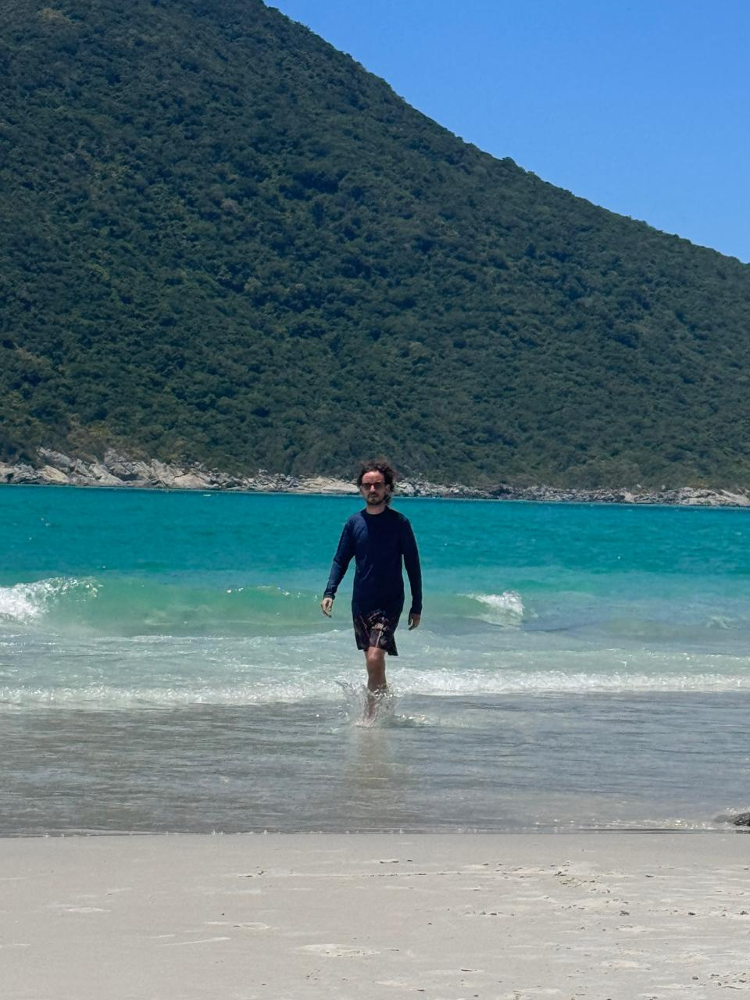
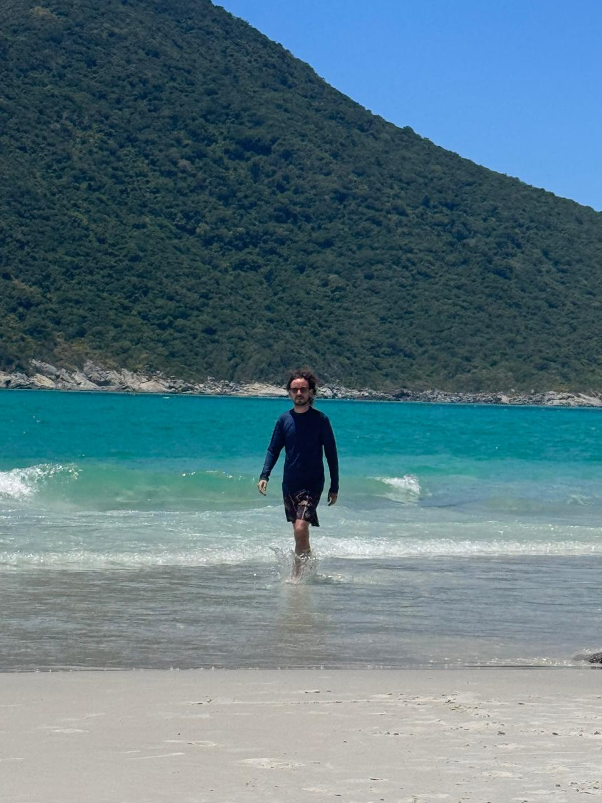

Quiénes somos
Somos Azul y Diogo, una pareja que ama viajar, descubrir lugares nuevos y vivir experiencias distintas. Nos encanta compartir no solo la vida diaria sino también el camino. Viajamos al sur de Argentina, a Mendoza, a distintas zonas de Brasil y ahora estamos planeando Colombia y Europa. Viajamos distinto, pero vamos al mismo ritmo. Y eso lo es todo.
Azul
Organizadora oficial, obsesiva de mapas, horarios, alojamientos y detalles. Si hay una tabla comparativa, la hizo. Apasionada del diseño UX/UI, escritura e investigación. Estudiante de Antropología, sueña con conocer todas las culturas posibles.
Diogo
Trabaja en una tienda de mascotas. Ama viajar, improvisar y disfrutar del camino. No se obsesiona con la previa, pero es el primero en adaptarse, resolver y lanzarse a la aventura. Su tipo de viaje perfecto: aquel en el que pueda ver animales.